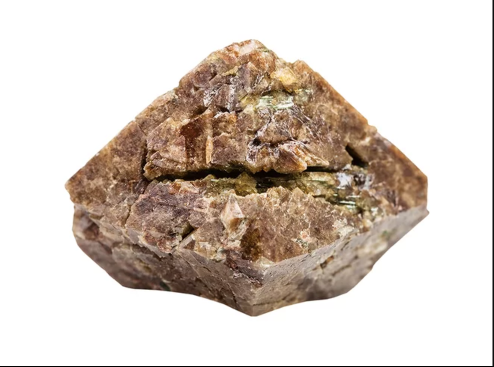
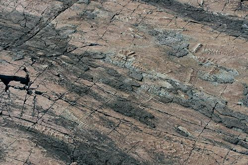

Mistaken Point was discovered by Shiva Misra in 1967. It is a headland located in the southeastern tip Newfoundland south of St. John’s, with its coastline stretching for almost 5kms. Mistaken Point had 5.7km2 of land declared an Ecological Reserve in 1987 which signifies that the area is under protection due to it containing some special features. In 2016, the World Heritage Committee recognized Mistaken Point as a World Heritage Site because of the composition of ancient rocks which held fossil remains of organisms that lived 572 to 542 million years ago. These fossils include some of the oldest metazoan fossils in North America and the oldest deep-water marine fossils in the world.

The formation of Mistaken Point includes many fine grained volcanic ash-beds. These ash-beds are a good source of Zircons which is a mineral that is often found in the crust of the earth. The presence of this mineral is significant because it contains trace amounts of uranium. This allows researchers to easily use the mineral for the uranium-lead method of radiometric dating. Through this method, scientists have established that Mistaken Point is about 565 million years old. The ash-beds are responsible for the preservation of the finely detailed fossils within Mistaken Point that makes this area an ecological reserve.

Image of a zircon mineral
The cause of the important volcanic ash-beds found on Mistaken Point is due to previously existing volcanic islands within the sea. When they erupted, a blanket of ash fell covering some soft body creatures which lead to the tremendous impressions and fossils. Without this, Mistaken Point would be without one of its hallmark features and likely not be an ecological reserve.
Argillite, a type of mudstone or consolidated clay, is also found at Mistaken Point. This fine-grained sedimentary rock was found to have unusual impressions embed onto them of some previously unknown soft-bodied sea animals. It was later discovered that these fossils are of the oldest known complex life forms that existed anywhere in the world. Argillite usually have high amounts of aluminum and silica within its composition.

Fossil Impressions on surface of argillite
References
Hrvatin, Vanessa. (2016, July 18). Newfoundland's Mistaken Point Named UNESCO World Heritage Site. Retrieved March 20 2018, from www.canadiangeographic.ca/article/newfoundlands-mistaken-point-named-unesco-world-heritage-site.
MacEachern, Daniel. "Newfoundland's Mistaken Point named UNESCO World Heritage site". CBC News. Retrieved March 20 2018, from http://www.cbc.ca/news/canada/newfoundland-labrador/mistaken-point-unesco-world-heritage-site-1.3682798
Misachi, J. (2017, March 09). Mistaken Point, Canada's Unique UNESCO World Heritage Site. Retrieved March 19, 2018, from https://www.worldatlas.com/articles/mistaken-point-canada-s-unique-unesco-world-heritage-site.html
Waggoner, B., & Smith, D. (2005, July 10). Mistaken Point, Newfoundland. Retrieved March 19, 2018, from http://www.ucmp.berkeley.edu/vendian/mistaken.html
https://alchetron.com/Fractofusus-misrai
https://www.livescience.com/34610-zirconium.html
http://destinationstjohns.com/member/mistaken-point-ecological-reserve/